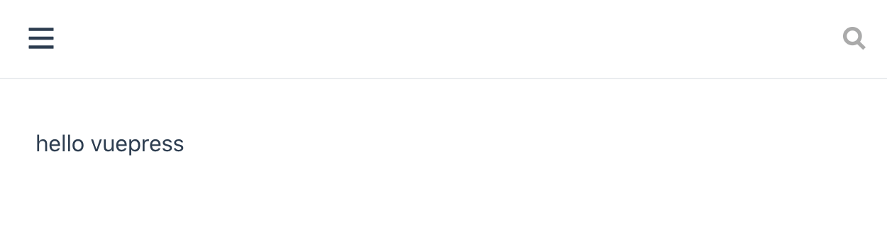
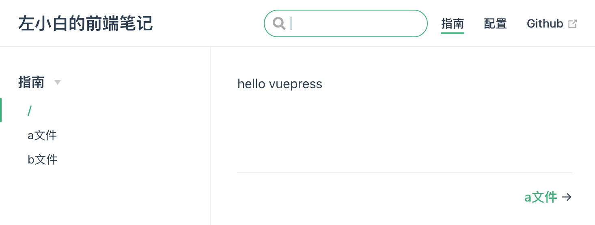
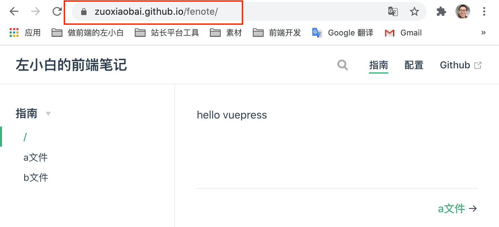

使用VuePress生成静态网站并部署到Github Pages
VuePress 是一个静态网站生成器，诞生初衷是为了支持 Vue 及其子项目的文档需求。目前 Vue 相关文档都是由 vuepress 搭建。相比其他静态站点生成工具，Docsify 是运行时驱动，通过 JS 加载内容，对 SEO 不够友好。VuePress 类似于 Hexo，主要区别是 VuePress 是由 Vue 驱动的。
VuePress 的比较好的地方：
- 丰富的 Markdown 扩展、主题风格优雅
- 可以使用插件支持 PWA
- 支持 vue 组件，SEO 友好
现在以 zuoxiaobai/fenote Github 仓库为例，为该仓库搭建一个官网
核心目录结构如下，完整目录结构参考 VuePress 目录结构
├── docs # docs 是文档项目名称，也可以自己命名
│ ├── .vuepress # .vuepress 配置、构件生成目录
│ ├── README.md # 默认的首页
│ ├── 其他markdown目录及文档
└── package.json它的本质就是，先按照指定的目录格式，写好 Markdown 及配置。然后使用 vuepress dev docs 命令生成静态站点，生成目录默认为 docs/.vuepress/dist。另外它还提供了开发服务器，运行 vuepress dev docs 可以实时看页面效果。
由于需要使用 vuepress 命令，我们为了方便后期维护迭代，一般不推荐全局安装 vuepress。在项目内安装即可。如果项目根目录没有 package.json，那就需要自己创建一个了。
# 初始化一个 package.json，如果这个文件存在，可跳过
npm init
# 安装 vuepress 开发依赖
npm install vuepress -D # --save-dev在 package.json 里面添加下面两条命令的快捷方式，这样就可以使用 npm run docs:dev，以及 npm run docs:build 来运行或构件静态站点了。
"scripts": {
"docs:dev": "vuepress dev docs",
"docs:build": "vuepress build docs"
},下面按照上面的目录结构，把 docs、.vuepress文件夹，以及 README.md 创建好，REAMEME.md 写一个 hello vuepress。运行 npm run docs:dev 它默认会在本地开启 8080 端口服务，访问效果如下图

可以看到标题、右上角导航栏、左侧菜单都没有出来。这就需要在 .vuepress/confing.js 写对应的配置了。你需要关系 4 点：
- title 用于配置左上角标题
- themeConfig.sidebar 用于配置右上角的导航栏
- themeConfig.nav 用于配置左侧菜单
- 首页默认是 docs/README.md，
/表示 docs 目录，比如：/a.md表示dosc/a.md
// .vuepress/config.js
module.exports = {
// base: '/fenote/',
title: '左小白的前端笔记',
description: '左小白的前端笔记，用于记录、完善个人前端知识体系结构',
themeConfig: {
sidebar: [
{
title: '指南',
children: [
'/',
'/a.md',
'/b.md'
]
}
],
nav: [
{ text: '指南', link: '/' },
{ text: '配置', link: '/config.md' },
{ text: 'Github', link: 'https://www.github.com/zuoxiaobai/fenote' }
]
}
}我们按照上面的配置文件写好后，在 docs 目录下创建 a.md，b.md，a.md 如下
# a文件
a.md由于 npm run build:dev 后，它支持类似 HMR 热模块加载的功能，修改后，会自动重新构建。根据上面的配置好后，效果如下

这样我们就可以根据自己的需要，规划顶部导航以及左侧菜单了。更多配置、markdown扩展语法参见：基本配置 | VuePress
这样写好后，只能本地运行，怎么部署到 Github Pages 呢？VuePress官网提供一个部署脚本，可以放到项目根目录 deploy.sh
#!/usr/bin/env sh
# 确保脚本抛出遇到的错误
set -e
# 生成静态文件
npm run docs:build
# 进入生成的文件夹
cd docs/.vuepress/dist
# 如果是发布到自定义域名
# echo 'www.example.com' > CNAME
# 在新生成的目录下初始化 .git，并 add 所有文件，提交到该目录下项目的本地master分支(默认)
git init
git add -A
git commit -m 'deploy'
# 如果发布到 https://<USERNAME>.github.io
# git push -f git@github.com:<USERNAME>/<USERNAME>.github.io.git master
# 如果发布到 https://<USERNAME>.github.io/<REPO>
# git push -f git@github.com:<USERNAME>/<REPO>.git master:gh-pages
# zuoxiaobai/fenote 对应的配置如下，将doscs/.vuepress/dist 目录下的 master 分支 push 到 fenote 远程远程仓库的 gh-pages 分支
git push -f git@github.com:zuoxiaobai/fenote.git master:gh-pages
cd -在 mac 下，新建的 deploy.sh 默认没有可执行权限，需要 chmod +x deploy.sh，这样就可以 ./deploy.sh 直接部署了。
注意：如果发布到 https://<USERNAME>.github.io/<REPO>，且没有使用自定义域名。则需要修改 config.js 的 base 配置为对应的仓库名
module.exports = {
base: '/fenote/',
title: '左小白的前端笔记',
// ...
}运行 ./deploy.sh，部署成功后，可以通过 https://zuoxiaobai.github.io/fenote/ 来访问了，如下图

注意：目前由于部署到了 fe.zuo11.com 二级域名上，github.io 的链接已无法访问